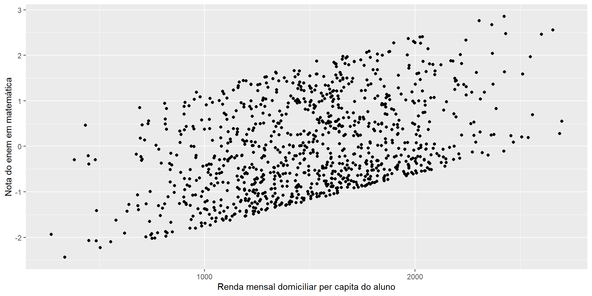

Regressão para pesquisas sociais
Aula 1 - Fundamentos para modelagem de dados quantitativos
Thiago Cordeiro Almeida
Doutorando, Centre d’Estudis Demogràfics (CED, Espanha)
Pesquisador Assistente, Cebrap
September 15, 2025
Antes de começar…
lista de presença!

Estrutura da aula
Tópicos que vamos cobrir hoje são:
Definições e noções acerca de dados quantitativos
Conceitos estatísticos importantes
Noção de correlação e causalidade
-
Modelagem de fenônemos sociais
Intuição
Limites
Fundamentos
Algumas definições acerca de dados quantitativos
Natureza dos dados quantitativos
Natureza dos dados quantitativos
está ligada à forma de classificação dos tipos de dados existentes.
Qualitativa
Passível de ser compreendida
Passível de ser “interpretada”
Possível de ser subjetivamente captada
Exemplos: expressões culturais, interações sociais
Quantitativa
Passível de ser contada/enumerada
Passível de ser “precisada”
Possível de ser objetivamente captada
Exemplos: Fluxos de atividades culturais, peso das pessoas ao nascer
Natureza dos dados quantitativos
está ligada à forma de classificação dos tipos de dados existentes.
Qualitativa
Passível de ser compreendida
Passível de ser “interpretada”
Possível de ser subjetivamente captada
Exemplos: expressões culturais, interações sociais
Quantitativa
Passível de ser contada/enumerada
Passível de ser “precisada”
Possível de ser objetivamente captada
Exemplos: Fluxos de atividades culturais, peso das pessoas ao nascer
Algumas definições acerca de dados quantitativos
Tipos de dados quantitativos
Tipos de dados quantitativos
podem ser divididos entre primários X secundários, públicos X privados, …
Dados primários
Associado à coleta direta dos dados de interesse.
Observação (não) participante;
Questionário;
Entrevistas; etc.
Dados secundários
Outro/a pesquisador/a ou instituição coletou o dado anteriormente sem a participação do/a pesquisador/a ou projeto que o utilizará.
- Podem ser dados quantitativos ou qualitativos (!!!)
Tipos de dados quantitativos
podem ser divididos entre primários X secundários, públicos X privados, …
Dados públicos
São fontes de informação produzidas por instituições governamentais ou que estão sob a governança de instituições do governo.
Em geral…
Permitem acesso mais rápido e fácil às informações;
Garantem uma maior confiabilidade dos dados;
Asseguram um maior rigor metodológico de sua coleta.
Limitações
Coleta dos dados não segue exatamente a proposta do uso do/a pesquisador/a;
Questões éticas envolvidas;
Validade dos dados; …
Tipos de dados quantitativos
Brainstorming de dados públicos!:
Conceitos estatísticos importantes
População e amostra
Não somente relacionado ao desenho de coleta dos dados, mas todas as estatísticas que calculamos estão associadas a esses conceitos
População
Um conjunto de elementos (animados ou inanimados) que compartilham de alguma característica definida e que seja relevante para o/a pesquisador/a ou pesquisa.
Amostra
Um fragmento, parte, subconjunto da população estudada. É definida, em geral, através de critérios explícitos.

Variáveis
São características específicas extraídas de uma determinada população ou amostra.
Exemplos:
sexo,
raça,
renda,
peso,
ano de nascimento,
local de residência,
número de animais de estimação em casa, …
No mundo real, é necessário que “simplifiquemos” sua complexidade para que seja possível a sua análise.
Natureza das variáveis
São categorizações excludentes, todavia, uma variável pode ser transformada em outra natureza/tipo.
Qualitativa
Valores apresentam atributos ou qualidades.
-
Nominal (não ordenado) - pode ainda ser dividida em binária ou não.
- Ex.: estados, sexo, nomes.
-
Ordinal (ordenado)
- Ex.: nível de escolaridade, faixa de renda, faixa de tamanho de cidade
Quantitativa
Valores são expressos em números, apresentam quantidades.
-
Discreta (contagem) - expressa em números inteiros.
- Ex.: anos de estudos, número de irmãos, número de domicílios.
-
Contínua (medidas) - expressa em números infinitesimais.
- Ex.: Altura, peso, renda
Tipos de medidas
Para cada tipo de variável, há um tipo de medida que se adequa melhor à sua análise.
Números absolutos
Números relativos (distribuição relativa; composição)
Proporção (numerador está contido no denominador)
Taxa (numerador não está contido no denominador)
Razão (divisão de duas grandezas quaisquer)
Medidas de tendência central (média, moda, mediana)
Medidas de variabilidade/dispersão (variância, desvio padrão, coeficiente de variação)
Tipos de análises
Há níveis de análises que são necessários de serem explorados na interação de fenômenos/variáveis.
Univariada
Variável qualitativa (binária, ordinal)
Variável quantitativa (contínua, discreta)
Bivariada
Quali X Quanti
Quali X Quali
Quanti X Quanti
Multivariada
Quali X Quali X Quali
Quali X Quali X Quanti
Quanti X Quanti X Quali
Quanti X Quanti X Quati
Tipos de análises
Há níveis de análises que são necessários de serem explorados na interação de fenômenos/variáveis.
Univariada

Bivariada

Multivariada

Pausa!

Relação entre fenômenos sociais: associação ou efeito?
Quando e como podemos dizer que um fenômeno social interage com o outro?
Formas de se captar a interação entre fenômenos sociais
O principal intuíto por trás da ideia de analisar dois fenômenos sociais conjuntamente está na possível relação entre eles.
Isso carrega uma ideia subjacente de que eles apresentam uma dependência/interação um com o outro.
Partindo dessa ideia, como se quantifica a interação entre fenômenos sociais?
Formas de se captar a interação entre fenômenos sociais
Quantificação da interação entre fenômenos sociais
- Estabeleça a natureza da relação entre eles
- Em geral, podemos estabelecer a relação entre fenômenos sociais através de: (i) abordagem teórica; (ii) evidênciais empíricas; ou (iii) ambos!
Formas de se captar a interação entre fenômenos sociais
Quantificação da interação entre fenômenos sociais
- Estabeleça a natureza da relação entre eles
- Em geral, podemos estabelecer a relação entre fenômenos sociais através de: (i) abordagem teórica; (ii) evidênciais empíricas; ou (iii) ambos!
Formas de se captar a interação entre fenômenos sociais
Quantificação da interação entre fenômenos sociais
.2. Explore a relação entre eles empíricamente
Há diferentes tipos de análises que podem ser feitas para explorar a relação entre dois fenômenos sociais a depender da natureza dos fenômenos analisados.
Formas de se captar a interação entre fenômenos sociais
Quantificação da interação entre fenômenos sociais
.2. Explore a relação entre eles empíricamente
Há diferentes tipos de análises que podem ser feitas para explorar a relação entre dois fenômenos sociais a depender da natureza dos fenômenos analisados.

Formas de se captar a interação entre fenômenos sociais
Quantificação da interação entre fenômenos sociais
- Avalie a magnitude da interação estatísticamente
Há diferentes medidas estatísticas para avaliar se há e a magnitude da relação entre fenômenos sociais.
Elas nos apontam (i) se há diferença estatisticamente significativa; (ii) a força dessa diferença; e (iii) a direção dessa diferença.
Formas de se captar a interação entre fenômenos sociais
Quantificação da interação entre fenômenos sociais
Significância estatística
Força da relação entre elas
Direção da diferença
Formas de se captar a interação entre fenômenos sociais
Quantificação da interação entre fenômenos sociais
Significância estatística
É medida através da diferença entre as distribuições estatísticas das variáveis (Qui-Quadrado, P-Pearson)
Nos dis se temos evidênciais suficientes para aceitar a hipótese de que há diferença entre elas.
Força da relação entre elas
Direção da diferença
Formas de se captar a interação entre fenômenos sociais
Quantificação da interação entre fenômenos sociais
Significância estatística
É medida através da diferença entre as distribuições estatísticas das variáveis (Qui-Quadrado, P-Pearson)
Nos dis se temos evidênciais suficientes para aceitar a hipótese de que há diferença entre elas.
Força da relação entre elas
Após analisar a magnitude, a análise da força nos diz se além de estatisticamente significante, há uma expressiva diferença entre elas.
Direção da diferença
Formas de se captar a interação entre fenômenos sociais
Quantificação da interação entre fenômenos sociais
Significância estatística
É medida através da diferença entre as distribuições estatísticas das variáveis (Qui-Quadrado, P-Pearson)
Nos dis se temos evidênciais suficientes para aceitar a hipótese de que há diferença entre elas.
Força da relação entre elas
Após analisar a magnitude, a análise da força nos diz se além de estatisticamente significante, há uma expressiva diferença entre elas.
Direção da diferença
A direção da relação nos diz se é:
Relação direta: aumento em \(X\) leva a um aumento em \(Y\) (vice-versa).
Relação indireta: aumento em \(X\) leva a uma redução em \(Y\) (vice-versa).
Formas de se captar a interação entre fenômenos sociais
Quantificação da interação entre fenômenos sociais: O exemplo do programa pé-de-meia.
Pearson's product-moment correlation
data: renda and enem_mat
t = 17.207, df = 998, p-value < 2.2e-16
alternative hypothesis: true correlation is not equal to 0
95 percent confidence interval:
0.4290547 0.5247576
sample estimates:
cor
0.4783251 Qual a conclusão que teríamos?
Um aumento da renda teria um efeito direto de 50% no aumento da nota de matemática.
Um aumento da nota de matemática teria um efeito direto de 50% no aumento da renda.
Relação entre fenômenos sociais: associação ou efeito?
Correlação e causalidade
Correlação e causalidade
Em pesquisas sociais, o estabelecimento da relação entre um determinado fenômeno \(X\) e \(Y\) é tema de muitas áreas de pesquisa.
Correlação e causalidade
Em pesquisas sociais, o estabelecimento da relação entre um determinado fenômeno \(X\) e \(Y\) é tema de muitas áreas de pesquisa.
Correlação
Estabelece uma relação entre dois fenômenos, apresentando sua significância estatística, força da relação e direção, sem afirmar a ordem desta relação.
Potencialidades
- Sabe-se em que medida ambos os fenômenos se interagem!
Limitações
- Não se sabe se mudanças em \(X\) levam a mudanças em \(Y\) ou o contrário.
Correlação e causalidade
Causalidade
Além de estabelecer significância, força da relação e direção, também pressupõe o estabelecimento de uma ordem para que a relação seja observada.
Potencialidades
Mudanças em \(X\) levam à mudanças em \(Y\) e não o contrário.
É muito mais poderoso quando se pensa em alocação de recursos públicos, privados ou até mesmo o estabelecimento de relações teóricas.
Limitações
Embora poderoso, estabelecer relações diretas entre fenômenos sociais é muito difícil de ser feito na vida real de pesquisa.
Fenômenos sociais estão intrínsecamente relacionados entre eles, sendo necessário abordagens mais complexas para endereçar a causalidade (e até mesmo a associação).
Modelagem de fenômenos sociais
Intuição
O que é e por que modelar?
A modelagem estatística é um exercício de estabelecimento da relação entre diferentes fenômenos, neste caso sociais.
O que é e por que modelar?
A modelagem estatística é um exercício de estabelecimento da relação entre diferentes fenômenos, neste caso sociais.
Isso parte do pressuposto de que conhecemos a verdadeira fórmula/lei que rege a relação entre os fenômenos estabelecidos. Elas podem ser:
Lineares;
Quadráticas;
Logarítmicas;
Exponenciais; …
O que é e por que modelar?
A modelagem estatística é um exercício de estabelecimento da relação entre diferentes fenômenos, neste caso sociais.
Isso parte do pressuposto de que conhecemos a verdadeira fórmula/lei que rege a relação entre os fenômenos estabelecidos. Elas podem ser:
Lineares;
Quadráticas;
Logarítmicas;
Exponenciais; …
“Todos os modelos estão errados, mas alguns são úteis” George E. P. Box
O que é e por que modelar?
A partir da realidade em que conhecemos, formulamos uma relação matemática que nos permita avaliar e, se assegurados alguns pressupostos, generalizar as relações estabelecidas em uma pequena amostra da realidade para toda a população a que nossos dados são representativos.
Para isso, precisamos:
Saber o motivo pelo qual estamos modelando: qual a motivação?
Estabelecer a relação entre os fenômenos a serem modelados: qual tipo de relação eles têm?
Explorar e descrever a relação entre eles: análise exploratória dos dados!
Construir o modelo para a população a que queremos generalizar
Implementar o modelo populacionar para a amostra da população que temos acesso
Avaliar a validade do nosso modelo
Estabelecer as conclusões possíveis com nossos modelos
Motivações para se modelar fenômenos sociais
Pode-se estar interessado em predizer tendências futuras para determinado fenômeno sociais de interesse – PREDIÇÃO – ou compreender em que medida um fenômeno afeta outro – RELAÇÃO ENTRE FENÔMENOS.
Motivações para se modelar fenômenos sociais
Predição
Sabendo-se quais são os determinantes de um determinado fenômeno social \(Y\), pode-se predizer o comportamento futuro \(\hat{Y}\) com base nas mudanças que ocorrerão em seus determinantes.
São chamados de modelos preditivos.
Muito utilizados, atualmente, em modelos de aprendizado de máquina (machine learning)1.
Relação entre fenômenos
Mais comuns em estudos de políticas públicas para desenho de programas sociais, em estudos acadêmicos ou em estudos de mercado, esses modelos buscam estabelcer a relação entre um fenômeno \(X_1\) e o fenômeno de interesse \(Y\) a partir do controle por outras variáveis que também podem afetar \(Y\)2.
Limites
Quais são os limites da modelagem de dados?
Limites
Quais são os limites da modelagem de dados?
Dados disponíveis
Se não há dados ou os dados são ruins, a modelagem vai ser diretamente afetada por isso.
Limites
Quais são os limites da modelagem de dados?
Dados disponíveis
Se não há dados ou os dados são ruins, a modelagem vai ser diretamente afetada por isso.
Conhecimento teórico sobre a relação entre fenômenos
Se não há um embasamento teórico ou empírico suficiente para estabelecer as relações entre os fenômenos, o modelo terá alcance limitado.
Limites
Quais são os limites da modelagem de dados?
Dados disponíveis
Se não há dados ou os dados são ruins, a modelagem vai ser diretamente afetada por isso.
Conhecimento teórico sobre a relação entre fenômenos
Se não há um embasamento teórico ou empírico suficiente para estabelecer as relações entre os fenômenos, o modelo terá alcance limitado.
Conhecimento técnico sobre a relação entre fenômenos
Mesmo havendo conhecimento teórico suficiente, em muitos casos, o conhecimento técnico dos modelos que conhecemos não permitem que testemos certas hipóteses.
Isso é tudo para hoje!
Para próxima aula:
- Exercício sobre correlação espúria
- Leitura de material para aula de hoje (caso não tenha lido)
- Leitura de material para a aula seguinte (Ver ementa)
Isso é tudo para hoje!
Orientações sobre o exercício:
Explore os dados contidos na pasta
pratica > dados_correlacao.csvPlot um gráfico das duas variáveis disponíveis
Analise a correlação de Pearson
Apresente suas hipóteses sobre o que explica isso.

Presidência
Diretoria Administrativa
Diretoria Científica
Coordenação de Seminários
Coordenação de Cursos
Adrian Gurza Lavalle
Victor Callil
Arilson Favareto
Bianca Tavolari
Monise Fernandes Picanço
Curso
Introdução à análise de regressão para pesquisas sociais
Ministrante
Thiago Cordeiro Almeida
E-mail: thiagocordalmeida@gmail.com
Github: @thiagocalm

cebrap.lab - Introdução à análise de regressão para pesquisas sociais